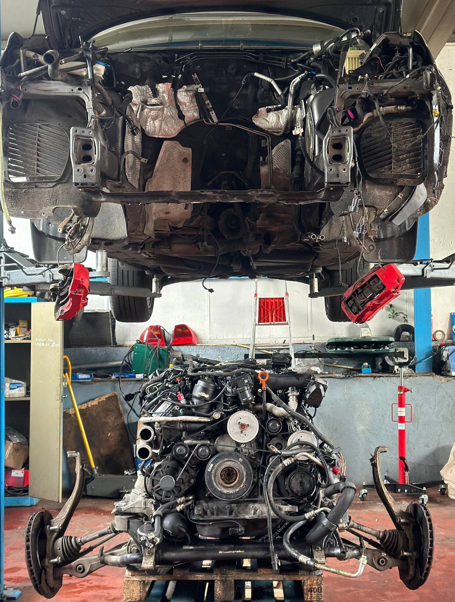
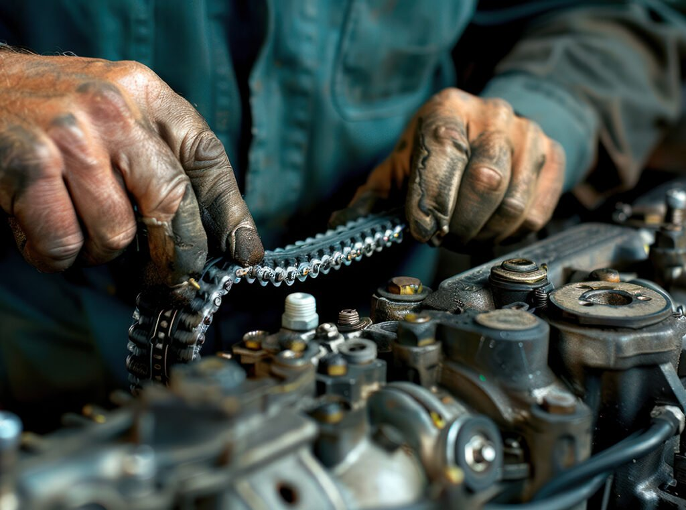
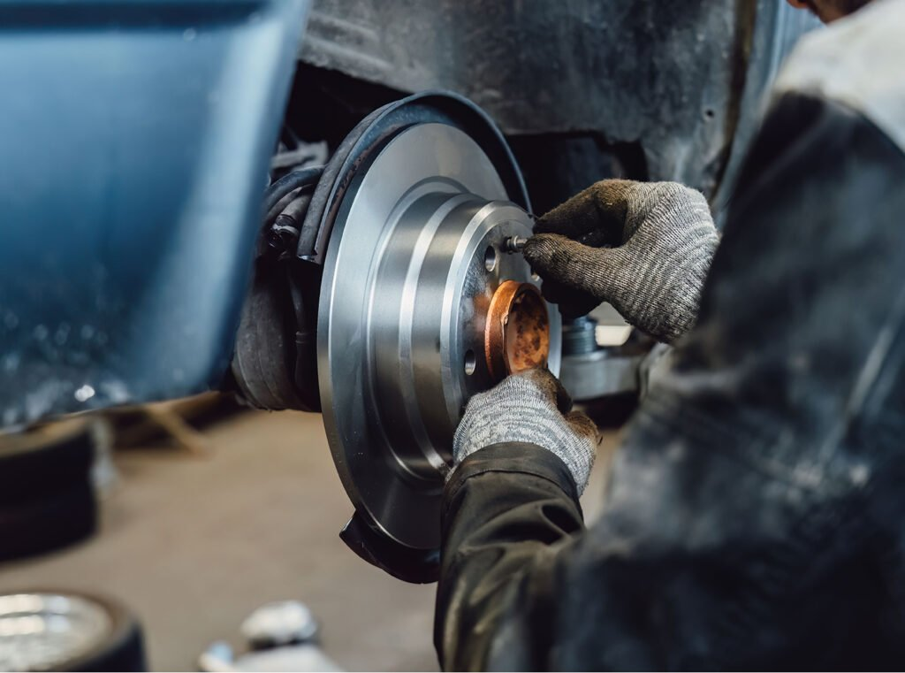
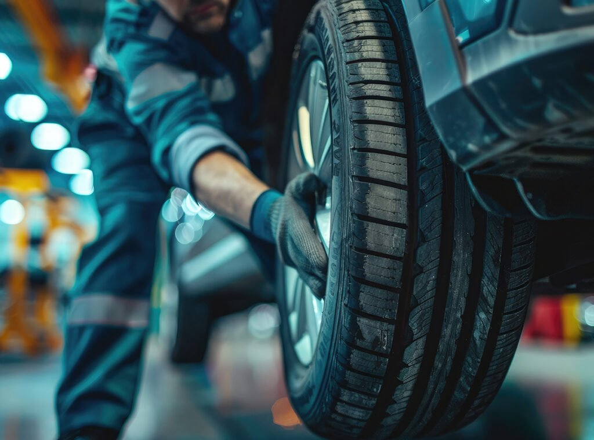
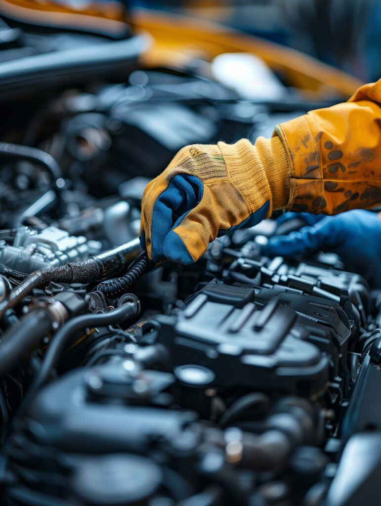
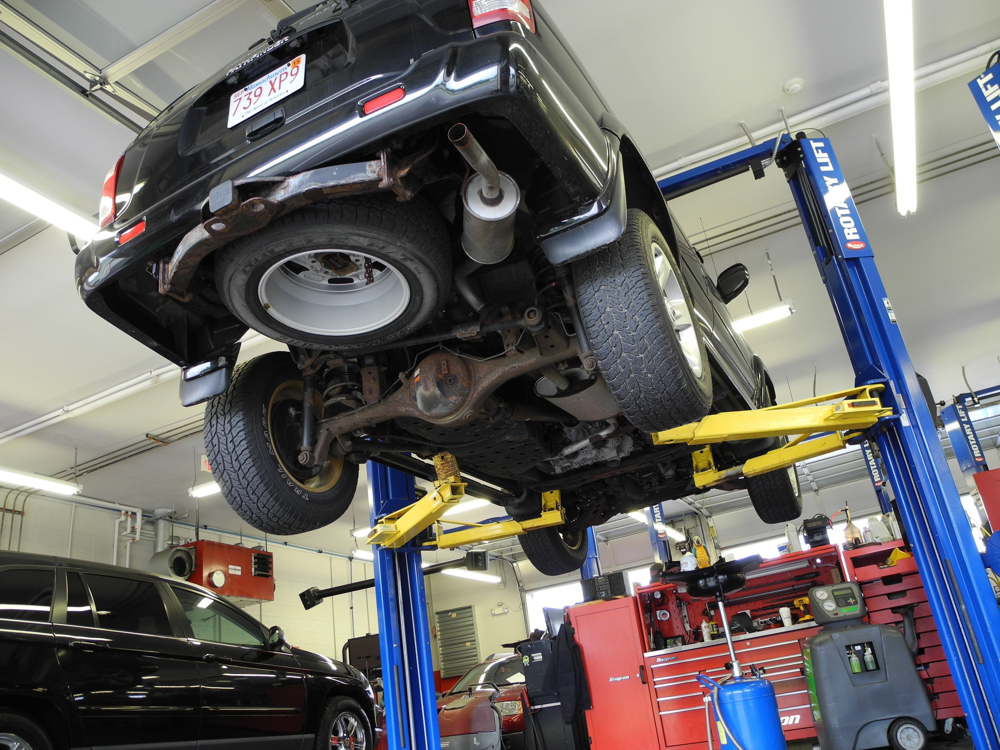

Onderhoud alle merken
Van klein onderhoud tot technische diagnose en herstellingen voor elk merk.
Garage Beveren • Antwerpen • Waasland
Bij Layan Garage BV helpen wij klanten uit Beveren, Antwerpen, Waasland, Sint-Niklaas, Mechelen en Gent met onderhoud, diagnose, herstellingen en de aan- of verkoop van een tweedehands wagen.
Onderhoud alle merken
Van klein onderhoud tot technische diagnose en herstellingen voor elk merk.
Eerlijke prijzen
Duidelijke communicatie en transparante afspraken voor elke klant.
Gecontroleerde wagens
Tweedehands voertuigen met aandacht voor betrouwbaarheid en kwaliteit.
Open ma–za
Snel bereikbaar voor onderhoud, verkoop en praktische ondersteuning.

Contacteer ons voor een gratis computerdiagnose van uw wagen
Layan Garage BV is een veelzijdig garagebedrijf dat een breed scala aan autogerelateerde diensten aanbiedt.
Bij onze garage in Beveren-Waas kunt u terecht voor het periodiek onderhoud van uw auto. Tijdens dit onderhoud wordt uw auto op diverse punten gecontroleerd. Indien nodig voeren wij reparaties uit of vervangen wij onderdelen, altijd in overleg met u. Dit houdt uw auto in optimale conditie en bevordert zowel de levensduur als uw veiligheid op de weg.
Onze garage is gecertificeerd en officieel erkend als reparateur van een groot aantal automerken.
Naast groot onderhoud kunt u hier ook terecht voor kleinere diensten, zoals airconditioning en band- en wielservices. Ook voor een grondige controle of reparatie van uw remmen staan onze monteurs klaar.
Zes dagen per week staat ons team klaar voor onderhoud en reparatie van personenwagens en lichte vrachtwagens. Lees wat onze monteurs voor uw wagen kunnen betekenen.
Bij allround autobedrijf Layan Garage in Beveren-Waas bieden we een uitgebreid scala aan garagediensten voor alle soorten voertuigen.
Of u nu een compacte stadsauto, een middenklasser of een grote SUV heeft, onze ervaren monteurs zorgen ervoor dat uw auto in topconditie is voordat deze de werkplaats verlaat. Bij eventuele problemen wordt er steeds een grondige inspectie uitgevoerd, inclusief motordiagnose indien nodig.
Onze deskundige monteurs kunnen elk probleem oplossen, ongeacht het type of merk van uw auto, zodat u snel en veilig weer op weg kunt.
Maak een afspraakVoor het optimaal functioneren van uw auto is het essentieel om regelmatig de olie en filters te controleren en te vervangen. Dit helpt om motorschade te voorkomen en verlengt de levensduur van uw voertuig.
Ons ervaren team staat klaar om het onderhoud van elk type en merk auto professioneel voor u uit te voeren. Bij Layan Garage staat klanttevredenheid voorop.
Wij streven ernaar om uw auto in topconditie te houden. Daarom gebruiken we uitsluitend hoogwaardige materialen, zoals A-merk olie en oliefilters die perfect passen bij het motortype van uw auto.
Maak een afspraak
Onder de motorkap van uw auto bevinden zich verschillende riemen en slangen die essentieel zijn voor het goed functioneren van de motor en de veiligheid tijdens het rijden. Regelmatig onderhoud en tijdige vervanging bij slijtage zijn daarom van groot belang.
Als een distributieriem niet op tijd wordt vervangen, bestaat het risico dat deze breekt, wat ernstige en kostbare motorschade kan veroorzaken. Wij vervangen elke distributieriem zorgvuldig, ongeacht type of merk, en gebruiken originele en hoogwaardige onderdelen.
Maak een afspraakDe airconditioning in uw auto biedt comfort en verhoogt de veiligheid. In de zomer houdt het u koel en alert, terwijl het in de winter helpt de ramen snel te ontwasemen voor beter zicht.
Een airco bevat verschillende filters die de binnenkomende lucht zuiveren. Deze raken na verloop van tijd verstopt met vuil en stof en moeten regelmatig worden schoongemaakt of vervangen. Voor voldoende koelcapaciteit heeft de airco ook koelmiddel nodig.
Laat daarom uw airconditioning jaarlijks controleren, reinigen en bijvullen voor optimale prestaties. Ons team biedt kwalitatief onderhoud tegen een scherpe prijs.
Maak een afspraak
Zonder goed werkende remmen is veilig rijden onmogelijk. Daarom is het essentieel om defecte remmen direct te laten repareren.
Wij controleren alle onderdelen van het remsysteem grondig. Zowel remschijven als remblokken worden zorgvuldig geïnspecteerd op slijtage en gebreken. Onze experts informeren u precies over de conditie van uw remmen en of vervanging nodig is.
Ook remvloeistof en remslangen worden gecontroleerd. Een tekort aan remvloeistof of scheurtjes in de slangen kan tot slecht functionerende remmen leiden. Laat uw remmen daarom regelmatig preventief controleren.
Maak een afspraak
Banden zijn cruciaal voor de veiligheid van uw auto. Versleten of beschadigde banden kunnen gevaarlijke situaties veroorzaken, zoals slippen of een klapband. Goed onderhouden banden met voldoende profiel en de juiste spanning zorgen voor betere grip en een langere levensduur.
Laat daarom de conditie en spanning van uw banden controleren door een ervaren monteur. Bij Layan Garage krijgt u steeds deskundig en eerlijk advies.
Een controle van uw banden kan ook gecombineerd worden met een algemene onderhoudsbeurt, zodat uw auto volledig gecontroleerd is en u weer veilig de weg op kunt.
Maak een afspraak
Regelmatig onderhoud is essentieel om uw auto in goede conditie te houden en de kans op onverwachte pech te verkleinen. Tijdens een periodieke onderhoudsbeurt controleren onze ervaren monteurs alle vitale onderdelen zorgvuldig en repareren of vervangen deze indien nodig. Zo blijft uw auto in topvorm, gaat hij langer mee en worden dure reparaties in de toekomst voorkomen.
Voor het onderhoud van uw auto bent u bij de deskundigen van Layan Garage in Beveren-Waas aan het juiste adres. Onze garage is gecertificeerd als officieel onderhouds- en reparatiebedrijf. U kunt bij ons terecht voor het onderhoud van alle merken.
Voor iedereen die een tweedehands auto wil kopen of zijn huidige auto wil verkopen, is onze garage in Beveren-Waas de plek om naartoe te komen. Onze tweedehandsauto's worden door ervaren monteurs gecontroleerd en aangeboden tegen eerlijke, marktconforme prijzen.
Wilt u uw eigen auto verkopen? Dan kunt u rekenen op een transparante afhandeling en een realistisch bod dat de werkelijke waarde van uw voertuig weerspiegelt. U bent ook van harte welkom om een proefrit te maken in de auto van uw dromen.
Ongeacht het merk of type bent u welkom om langs te komen en de verkoop te bespreken. Na een korte inspectie van uw voertuig bespreken wij de prijs en voorwaarden. U ontvangt een eerlijke, marktconforme prijs die overeenkomt met de leeftijd en staat van uw auto.
Bent u akkoord met de prijs? Dan handelen wij de verkoop netjes af via een contract, zodat u zeker bent van een eerlijk en veilig verkoopproces.
Zoekt u een vervanging voor uw verkochte auto? Onze gecontroleerde tweedehandswagens zijn direct beschikbaar en uiteraard kunt u ook een proefrit maken.
Vraag een beoordelingBent u op zoek naar een specifieke auto van een bepaald merk, bouwjaar of kleur? Heeft u een bepaald budget en wilt u zeker zijn dat de auto in perfecte staat is, zonder verborgen gebreken? Dan bent u bij Layan Garage aan het juiste adres.
Wij hebben een selectie tweedehandsauto's van diverse merken direct op voorraad. U bent welkom om de auto's te bekijken en specificaties en prijzen te bespreken. Alle voertuigen zijn grondig geïnspecteerd door ons team. Uiteraard is een proefrit mogelijk in overleg.
Heeft u uw droomauto gevonden? Denk er dan aan om ook voor uw periodiek onderhoud regelmatig bij onze garage langs te komen. Zo houdt u de auto in goede conditie en draagt u bij aan een langere levensduur.
Bekijk ons aanbodBekijk een selectie van beschikbare en recent aangeboden wagens van Layan Garage BV. Bel ons voor meer info of een proefrit.
Voor de meest recente voorraad en aanvullende advertenties kunt u onze 2dehands-pagina openen.
Bel vandaag nog voor een snelle en eerlijke beoordeling van uw wagen. Wij helpen u verder met duidelijke communicatie en een persoonlijke aanpak.
Bereikbaar voor onderhoud, herstellingen, diagnose en verkoopadvies van maandag tot zaterdag.

Neem contact op voor onderhoud, verkoop, diagnose of een afspraak in onze garage in Beveren-Waas.
Albert Panisstraat 130
9120 Beveren-Waas, België
Heeft u een vraag? Hieronder vindt u de meest gestelde vragen over onze diensten.
Ja, wij kopen tweedehands wagens aan. Breng uw wagen langs of bel ons op 0486 89 00 02 voor een snelle en eerlijke beoordeling.
Ja, Layan Garage BV verzorgt onderhoud, diagnose en herstellingen voor alle merken personenwagens en lichte bedrijfswagens.
Ja, u kunt bellen op 0486 89 00 02 of ons contactformulier invullen. Wij reageren zo snel mogelijk voor een afspraak op maat.
Ja, wij zijn open op zaterdag van 09:00 tot 18:00. Maandag tot vrijdag zijn wij ook open van 09:00 tot 18:00.